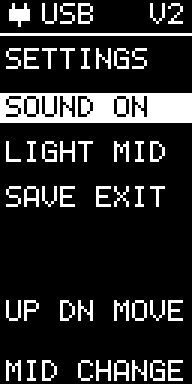

Settings
Sound and screen brightness
Use the top and bottom buttons to choose a row, then press middle to change it.
- SOUND ON / OFF: enable or mute all button sounds, status sounds and the startup tune.
- LIGHT LOW / MID / HIGH: cycle between three screen-brightness levels.
- SAVE EXIT: remember your choices after power-off and return Home.
Changes preview immediately. Select SAVE EXIT before switching EggBert off. Saved mute also silences the next startup tune.
If SAVE ERROR appears, Settings stays open so you can select SAVE EXIT again. SCREEN ERR keeps the previous brightness choice.
Changing preferences preserves calibration and any completed recording waiting to be downloaded.
